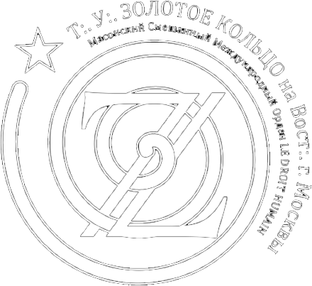

Высшие градусы Древнего и
Принятого Шотландского Устава
Треугольник Усовершенствования «Золотое Кольцо»

Следует отметить, что одной из особенностей нашего Ордена является непрерывная система инициатического развития, от 1 до 33 градуса Древнего и Принятого Шотландского Устава. Таким образом, структуры Высших градусов являются логичным продолжением учения Символических Лож, работающих в 1-3 градусах.
После третьего градуса, степени Мастера вольного каменщика, следуют так называемые Градусы Усовершенствования, 4-14. Работы в этих градусах ведутся в отдельных структурах, называемых Треугольниками Усовершенствования и Ложами Усовершенствования.
История Треугольника Усовершенствования “Золотое Кольцо”, проводящего свои работы на Вост:. г. Москвы, началась 22 марта 2015 г., в г. Бар-ле-Дюк, Франция, когда двое мастеров Достопочтенной Ложи “Новый Свет” №1989 были посвящены в 4 градус Древнего и Принятого Шотландского Устава. Возвышения в Высшие Градусы прошли и в ноябре того же года, но уже в Москве, при участии представителя Верховного Совета Ордена.
29 мая 2016 г., в масонском храме небольшого французского города Витри-ле-Франсуа вольные каменщики Достопочтенной Ложи “Новый Свет” №1989 были посвящены в 4 и 14 градусы Древнего и Принятого Шотландского Устава. Работы возглавляла Весьма Влиятельный Суверенный Великий Командор, Великий Мастер Ордена, И.Р. В этот день было заложено основание первого российского Треугольника Усовершенствования Масонского Смешанного Международного Ордена «LE DROIT HUMAIN».
13 ноября 2016 г. на Востоке г. Москвы прошли церемонии возвышения российских вольных каменщиков в Высшие Градусы Древнего и Принятого Шотландского Устава (4 и 12), после чего представители Верховного Совета Ордена провели торжественную церемонию учреждения первого в России Треугольника Усовершенствования «Золотое Кольцо».
С тех пор наш Треугольник Усовершенствования проводит ежемесячные работы с целью дать масонам символических мастерских возможность самоусовершенствования и расширения масонских познаний. Регулярно проводятся возвышения в Высших Градусах, а также прием новых членов , из числа Мастеров символических Лож, избывших свой срок в третьем градусе.
В частности, 16 сентября 2018 г., при участии делегата Верховного Совета Ордена и представителей финской и французской федераций Ордена, Мастера Д:.Л:. Новый Свет №1989, избывшие срок в своем градусе, были посвящены в 4-й градус Древнего и Принятого Шотландского Устава, а обладатели Высших Градусов были возвышены в 12-й и 14-й градус ДПШУ. Таким образом, Треугольник Усовершенствования «Золотое Кольцо», ведущий свои работы в 4-14 градусах, приблизился к учреждению полноценной Ложи Усовершенствования. Братская агапа, совместно с Сестрами и Братьями из финской и французской Федераций Ордена, завершила труды сего дня.
Таким образом, Треугольник Усовершенствования “Золотое Кольцо” является выражением основополагающего принципа нашего Ордена об инициатической непрерывности степеней ДПШУ и выражением учения, обеспечивающего духовный рост и развитие всем законно посвященным Мастерам нашего Ордена.